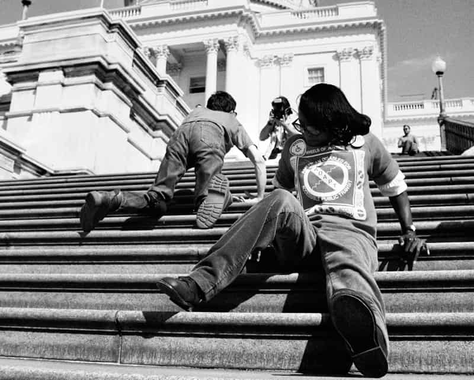

WashU Disability Resources
Washington University
Campus accommodations, accessibility support, housing information, and student services. disability.washu.edu
An augmented reality experience
on Brookings Hall
This experience overlays the steps of the U.S. Capitol onto Brookings Hall, placing the Capitol Crawl into a local architectural setting. Rather than reenacting disability, it focuses on public space, exclusion, and the long history of disability rights activism.
Point your device at the Brookings Hall steps when prompted to begin the augmented reality overlay.
On March 12, 1990, more than a thousand disability rights activists gathered on the west lawn of the U.S. Capitol to demand the passage of the Americans with Disabilities Act.
Led by Jennifer Keelan, an eight-year-old with cerebral palsy, dozens of protesters left their wheelchairs, crutches, and mobility aids at the base of the Capitol steps and crawled up the marble staircase on their hands and knees, exposing in one undeniable image what inaccessible architecture means in practice.
The 83 steps that separated them from the doors of Congress became a symbol of the barriers that had long excluded disabled people from public life. Congress passed the ADA four months later.
While the protest received media coverage at the time, it is rarely taught alongside other civil rights milestones. This experience is an effort to change that.

Capitol Crawl, Washington D.C., March 12, 1990
Aligning overlay…
The Capitol Crawl was not the end of the disability rights movement. It was one moment in an ongoing effort to redesign public life for everyone. The Brookings steps you're standing in front of are part of that same conversation.
WashU Disability Resources
Washington University
Campus accommodations, accessibility support, housing information, and student services. disability.washu.edu
ability_WashU
Student disability advocacy · Instagram @ability_washu
Student-led disability advocacy, awareness, and community organizing on campus.
WashU Disability Anthropology
Washington University
Student projects, accessibility research, and public-facing disability studies work. sites.wustl.edu/disabilityanthropology
Being Heumann: An Unrepentant Memoir of a Disability Rights Activist
Judith Heumann with Kristen Joiner · 2020
A memoir from one of the central figures of the disability rights movement.
Sitting Pretty: The View from My Ordinary Resilient Disabled Body
Rebekah Taussig · 2020
A personal essay collection on disability, public perception, and the built environment.
The Disability Rights Movement: From Charity to Confrontation
Doris Zames Fleischer & Frieda Zames · 2001
A narrative history of the U.S. disability rights movement and the fight for the ADA.
Three Days to See
Helen Keller
A classic essay imagining what one would value with only three days of sight. Full text available through the American Foundation for the Blind.
Cathedral
Raymond Carver
A short story about blindness, intimacy, and changing perception.
Mental Illness is not a Horror Show
Andrew Solomon
An essay critiquing sensationalized portrayals of mental illness in popular culture.
Sensations of Sound
Rachel Kolb
A reflective essay on deafness, language, identity, and sensory experience.
Seeing Blindness in Children’s Picturebooks
Chloë Hughes
An article examining how blindness is represented visually and narratively in children’s literature.
Stories About Disability Don’t Have to be Sad
Melissa Shang
An essay challenging pity-centered disability narratives.
Respectful Representations of Disability in Picture Books
Ashley E. Pennell, Barbara Wollak, David A. Koppenhaver
Guidance for evaluating respectful disability representation in children’s media.
Depiction of Intellectual Disability in Fiction
Anupama Iyer
An article exploring recurring stereotypes and representational patterns in fiction.
Crip Camp: A Disability Revolution
Documentary · 2020 · Netflix
A documentary following disabled youth organizers who became key figures in the disability rights movement.
Lives Worth Living
Documentary · PBS American Experience · 2011
An oral history documentary tracing the disability rights movement through the signing of the ADA.
Becoming Judy
Documentary short
A short documentary profile of Judith Heumann and her role in disability rights history.
The Peanut Butter Falcon
Feature film · 2019
An adventure-drama featuring a protagonist with Down syndrome seeking independence and identity.
Wonder
Feature film · 2017
A family drama about facial difference, school inclusion, and empathy.
CODA
Feature film · 2021
A coming-of-age story centered on a hearing child in a Deaf family.